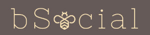

<!--The content below is only a placeholder and can be replaced.-->

<nav class="navbar navbar-light" style="background-color: #655A58;">
        <!--<a class="navbar-brand" href="#">BSocial</a>-->
        
        <button class="navbar-toggler" type="button" data-toggle="collapse" data-target="#navbarSupportedContent" aria-controls="navbarSupportedContent" aria-expanded="false" aria-label="Toggle navigation">
          <span class="navbar-toggler-icon"></span>
        </button>
      
        <div class="collapse navbar-collapse" id="navbarSupportedContent" >
          <ul class="navbar-nav mr-auto">
            <li class="nav-item">
              <a class="nav-link"  routerLink="/home" routerLinkActive="active" style="color:azure">Home</a>
            </li>
            <li class="nav-item">
                <a class="nav-link" routerLink="/profile" *ngIf='Logged' routerLinkActive="active" style="color:azure">Profile</a>
            </li>
            
            <li class="nav-item">
                <a class="nav-link" routerLink="/forgot" *ngIf='!Logged' routerLinkActive="active" style="color:azure">Forgot</a>
            </li>
          
            <li class="nav-item">
                <a class="nav-link" routerLink="/posts" *ngIf='Logged' routerLinkActive="active" style="color:azure">Make Post</a>
            </li>
          </ul>
          <ul class="navbar-nav">
              <a class="nav-link"   routerLink="/login" *ngIf='!Logged' routerLinkActive="active" style="color:azure">Login</a>
              <a class="nav-link"   routerLink="/register" *ngIf='!Logged' routerLinkActive="active" style="color:azure">Register</a>
              <a class="nav-link"  style="cursor:pointer" *ngIf='Logged' routerLink="/login" style="color:azure" (click)= "Logout()">Logout</a>     
          </ul>
        </div>
      </nav>    
      <div class="container">
        <router-outlet></router-outlet>            
      </div><div class="container">
<router-outlet></router-outlet>
</div>